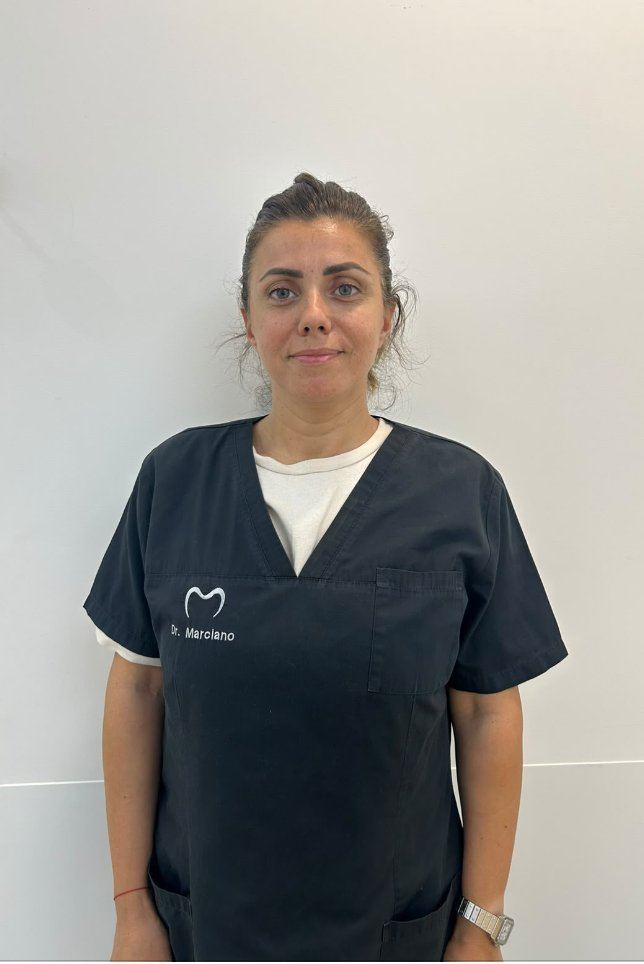
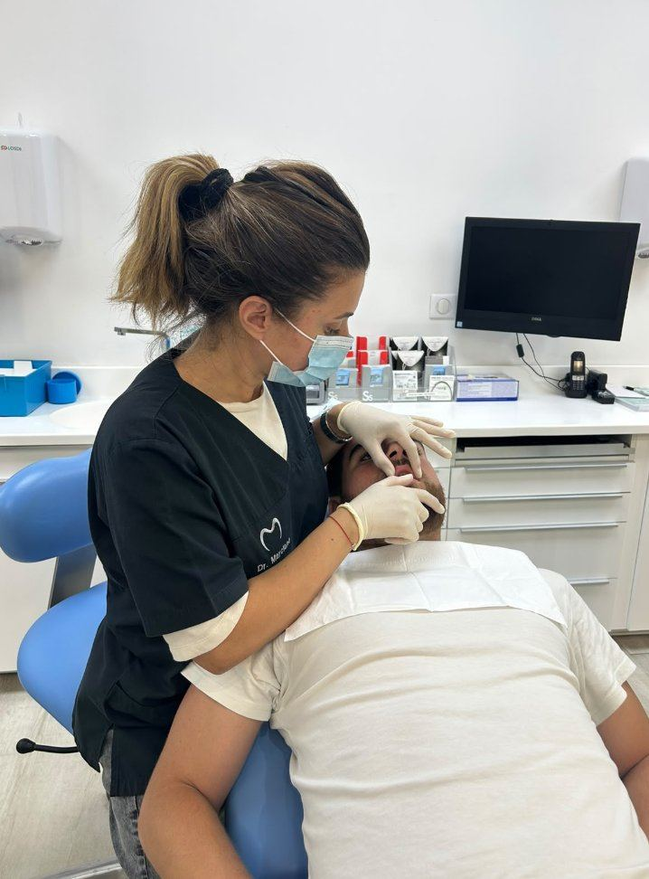
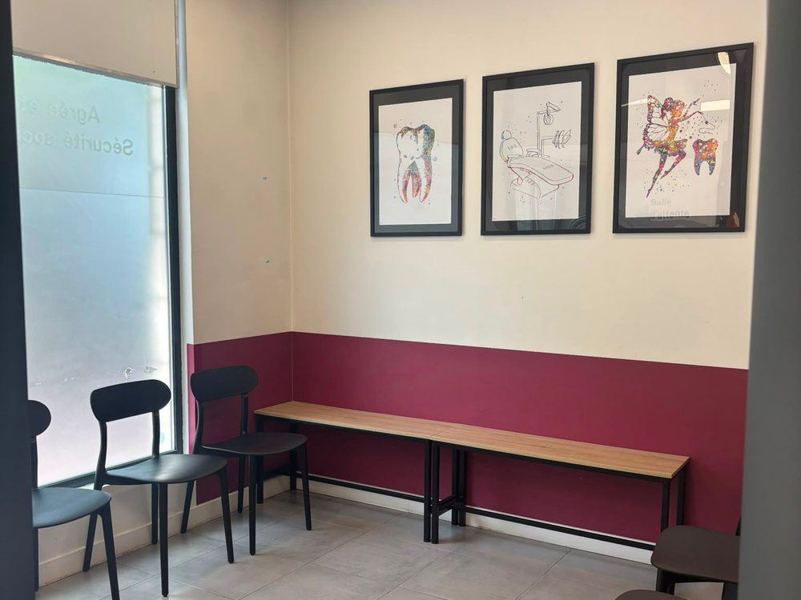

🧒
Enfants & adolescents
Dépistage précoce, appareils dentaires fixes ou amovibles dans un environnement rassurant et ludique.
En savoir plus →Vos orthodontistes à Charenton-le-Pont : le Centre d'Orthodontie Gravelle réunit les Dr Jessica Marciano et Dr Marie-Hélène Rit-Guyomard. Enfants, adolescents et adultes : des traitements modernes, dans un cabinet chaleureux et rassurant.
Prendre rendez-vous 01 43 96 26 00

Vos soins sont pris en charge selon les tarifs de l'Assurance Maladie.
Pas besoin d'avancer la part remboursée par la Sécurité sociale : nous pratiquons le tiers payant.
La Complémentaire santé solidaire (CMU) est prise en charge au cabinet.
Au Centre d'Orthodontie Gravelle, le Dr Jessica Marciano accompagne enfants, adolescents et adultes avec écoute, douceur et pédagogie. Chaque patient est reçu individuellement, dans un climat de confiance, avec un traitement expliqué en toute transparence.
Aux côtés du Dr Marie-Hélène Rit-Guyomard, elles mettent leur expertise au service de votre sourire, à chaque étape du traitement, dans un cabinet chaleureux et rassurant à Charenton-le-Pont.
Faire connaissance avec l'équipeUn suivi personnalisé pour chaque patient, du premier bilan jusqu'à la contention.
Dépistage précoce, appareils dentaires fixes ou amovibles dans un environnement rassurant et ludique.
En savoir plus →Il n'y a pas d'âge pour aligner ses dents : solutions discrètes et efficaces adaptées à votre vie quotidienne.
En savoir plus →Des gouttières transparentes sur-mesure, quasi invisibles et amovibles, pour corriger votre sourire en toute discrétion.
En savoir plus →Le Dr Marciano propose désormais des soins esthétiques médicaux au cabinet.
Pour hydrater, repulper et lisser la peau, avec un résultat naturel, dans un cadre médical sécurisé.
En savoir plus →Un soin pour raviver l'éclat du teint et affiner le grain de peau.
En savoir plus →Nettoyage en profondeur et hydratation intense pour une peau fraîche et lumineuse.
En savoir plus →Situé au cœur de Charenton-le-Pont, notre centre dispose d'équipements de dernière génération : radiologie panoramique numérique, salle de stérilisation aux normes et fauteuils dédiés aux enfants comme aux adultes.

Ouvert du lundi au vendredi, sur rendez-vous
Sécurité sociale, tiers payant et CMU
Enfants, adolescents et adultes accueillis
Un accompagnement clair, étape par étape.
Examen clinique, radiographies et écoute de vos attentes.
Un devis détaillé et un calendrier personnalisés.
Pose de l'appareil ou des aligneurs et suivi régulier.
Stabilisation du résultat pour un sourire durable.
J'ai fait plus de 2 ans d'orthodontie adulte avec le Dr Marciano, et je la recommande. Elle est toujours souriante, agréable et explique bien les choses. Elle a toujours pris le temps de me recevoir en cas d'urgence. Le cabinet est toujours propre et bien entretenu.
Très bon centre médical. Le Dr Marciano est une très bonne professionnelle, agréable, douce et de bon conseil. Toujours à l'écoute et disponible quand il y a besoin. Je recommande à 100 %. Elle a soigné mes enfants et moi-même adulte. Travail remarquable.
Je suis suivie par le Dr Marciano depuis plusieurs années et je ne pourrais pas être plus satisfaite ! Elle est toujours souriante, bienveillante et très professionnelle. À l'écoute de ses patients, elle explique tout avec patience et prend soin de chacun. Le centre est impeccable, je recommande fortement le Dr Marciano !
Le Dr Marciano est une orthodontiste exceptionnelle. Grâce à elle, j'ai aujourd'hui un sourire dont je suis fière et les compliments sont fréquents, même de la part de professionnels de santé. Elle a ce sens du détail rare et comprend naturellement vos attentes. Toujours douce, attentive et constante depuis plus de 15 ans. Je la recommande sincèrement !
Excellent orthodontiste ! Le Dr Marciano est chaleureuse, attentionnée et très professionnelle. Le traitement des bagues pour mon fils s'est parfaitement déroulé et le résultat est superbe. Je recommande vivement !
Cabinet très agréable et à l'écoute ! Le Docteur Marciano s'est occupée de mon fils il y a plusieurs années et il était évident qu'elle prenne en charge ma petite fille. J'en suis ravie car elle s'adapte à tous les profils, même les plus petits, qui viennent sans peur à chaque RDV et repartent le sourire « métallisé » aux lèvres. Merci pour votre professionnalisme et votre gentillesse 🙏
Le Centre d'Orthodontie Gravelle accueille les patients de Charenton-le-Pont et des communes voisines, Saint-Maurice, Maisons-Alfort, Ivry-sur-Seine et l'est parisien (Paris 12e). Que vous cherchiez un orthodontiste à Charenton pour votre enfant, un traitement pour adolescent ou une solution discrète pour adulte comme les aligneurs invisibles, les Dr Jessica Marciano et Dr Marie-Hélène Rit-Guyomard vous reçoivent au 176 rue de Paris, à deux pas du métro.
Cabinet agréé Sécurité sociale, tiers payant et CMU acceptés. Prise de rendez-vous simple et rapide, en ligne sur Doctolib ou par téléphone.
Le Centre d'Orthodontie Gravelle est situé au 176 Rue de Paris, 94220 Charenton-le-Pont (Val-de-Marne). Accessible en transports en commun, sur rendez-vous du lundi au vendredi.
Une première consultation est conseillée vers 6-7 ans, mais l'orthodontie s'adresse à tous les âges : enfants, adolescents et adultes.
Oui. Le cabinet est agréé Sécurité sociale, pratique le tiers payant et accepte la CMU (Complémentaire santé solidaire).
Oui, nous proposons les gouttières transparentes pour les adolescents et les adultes, en complément des appareils traditionnels.
En ligne sur Doctolib ou par téléphone au 01 43 96 26 00.
📍 176 Rue de Paris, 94220 Charenton-le-Pont
📞 01 43 96 26 00
Prenez rendez-vous dès aujourd'hui avec le Dr Jessica Marciano.
Rendez-vous en ligne Appeler le cabinet